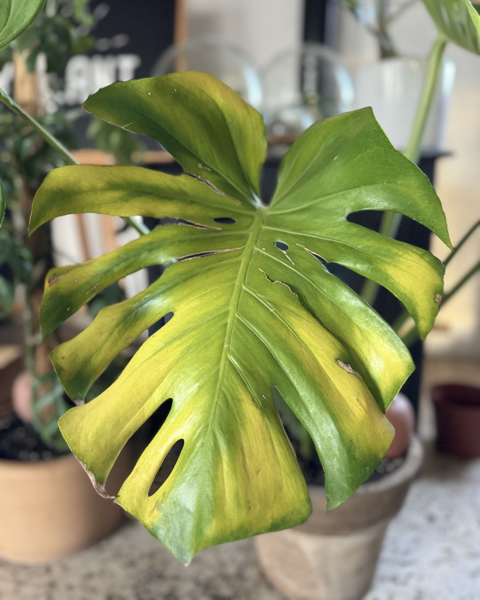
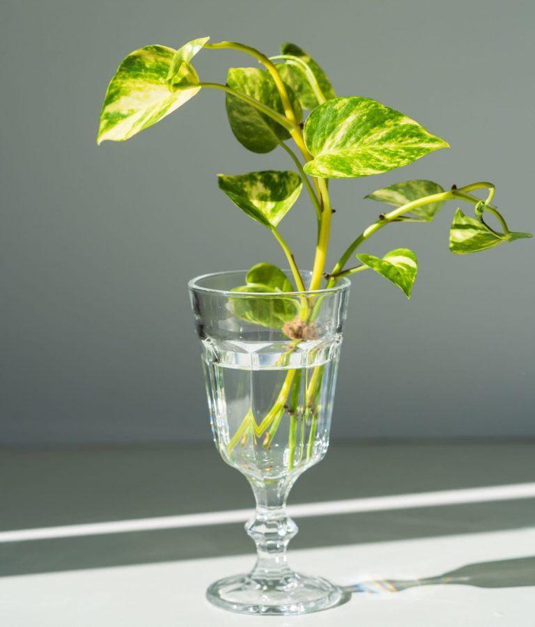
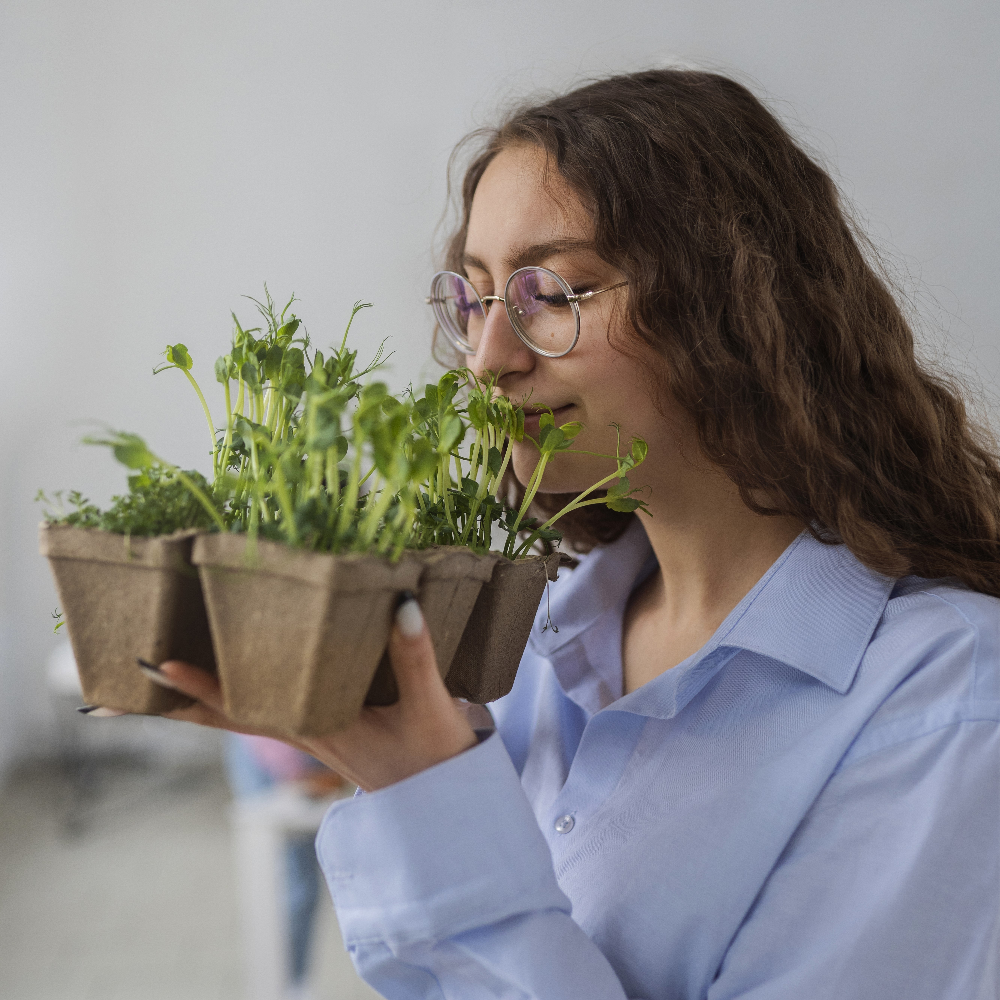
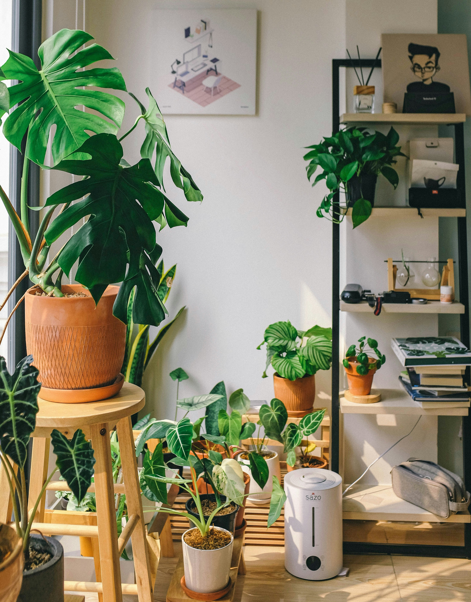

¿Tienes una consulta específica?
Nuestras expertas en botánica pueden ayudarte a resolver cualquier duda sobre el cuidado de tus plantas.
Consultar a una experta
Hace unas semanas noté que las hojas inferiores de mi monstera comenzaron a ponerse amarillas. Riego una vez por semana y está ubicada cerca de una ventana con luz indirecta. ¿Alguien sabe qué puede estar pasando?

Quería compartir mi experiencia propagando esquejes de pothos en agua. En solo 3 semanas ya tienen raíces de más de 5 cm. Si alguien tiene dudas sobre cómo hacerlo, ¡puedo compartir mi proceso paso a paso!


Estoy buscando recomendaciones para plantas que puedan sobrevivir en un baño con poca luz natural. Me encantaría agregar un poco de verde a este espacio, pero no sé qué plantas podrían adaptarse bien a estas condiciones.
Hoy quiero compartir cómo transformé mi espacio de trabajo con algunas plantas. Incluí sansevierias, pothos y un pequeño cactus. No solo se ve hermoso, sino que ha mejorado mi concentración y bienestar durante la jornada laboral.

Nuestras expertas en botánica pueden ayudarte a resolver cualquier duda sobre el cuidado de tus plantas.
Consultar a una experta
Tienda Siempre Verde - Av. Principal 123
17:00 - 19:00 hrs
InscribirseTu participación hace que esta comunidad crezca. ¡Gracias por ser parte de Siempre Verde!